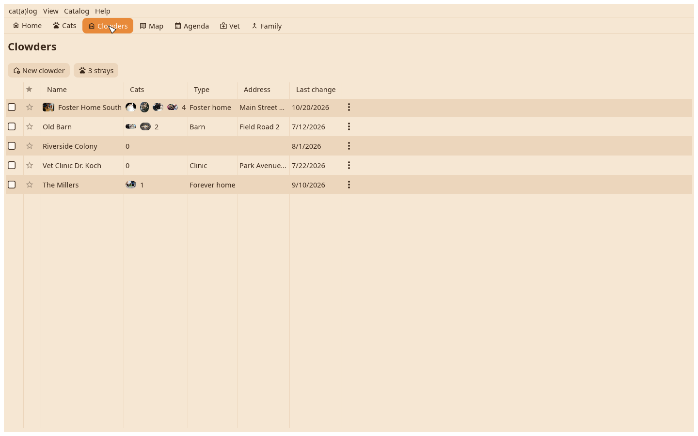
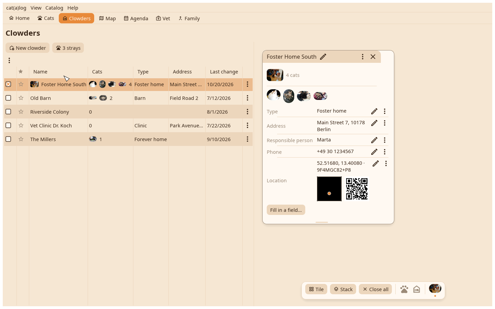
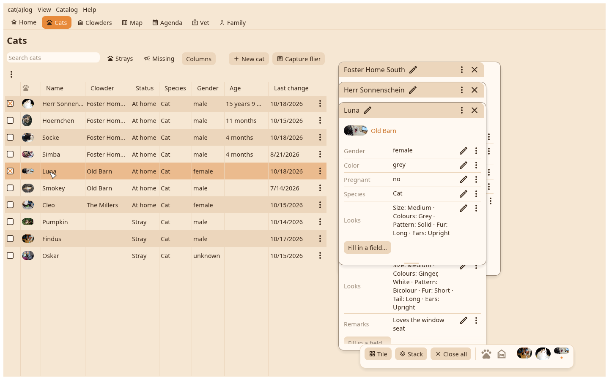
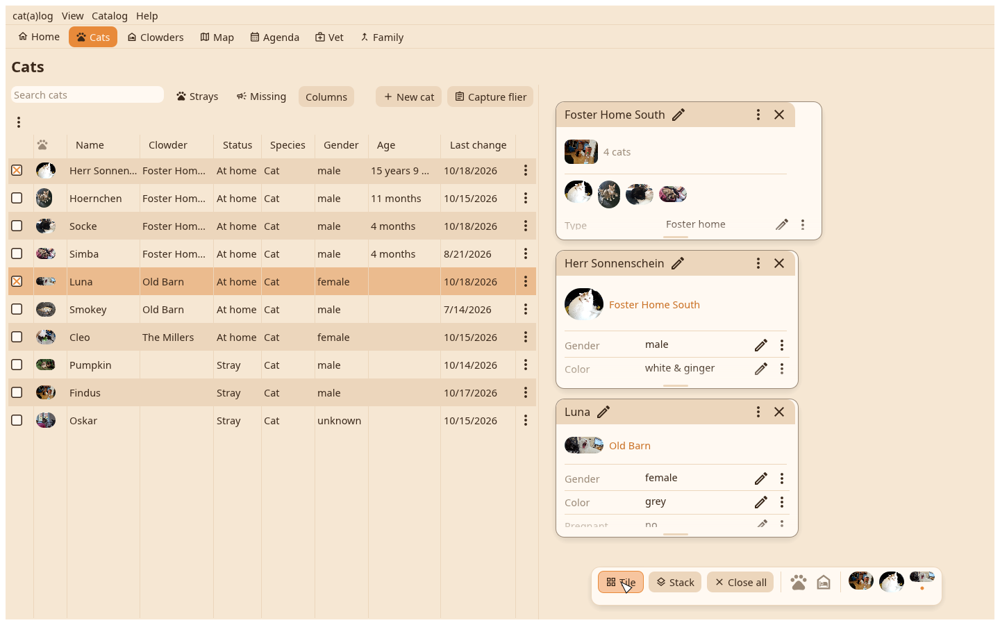

1. The Clowders table
Every home with its faces and count. A click marks a row.

2. The home's card
Enter lays the marked home on the desk as its card: cover, fields, the cats with their faces.

3. Two cats beside it
From the Cats table, a row and Enter per cat; each lands beside the others. Drag a title bar to move a card, its bottom edge to resize it.

4. Tile
The dock at the bottom: Tile lays the cards in a grid that fits, Stack piles them, Close all clears the desk. The layout is remembered per catalog.
